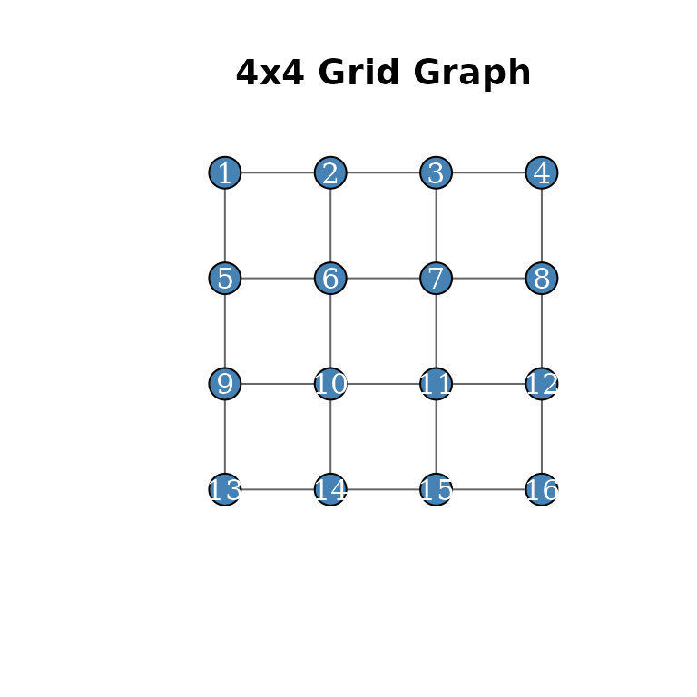
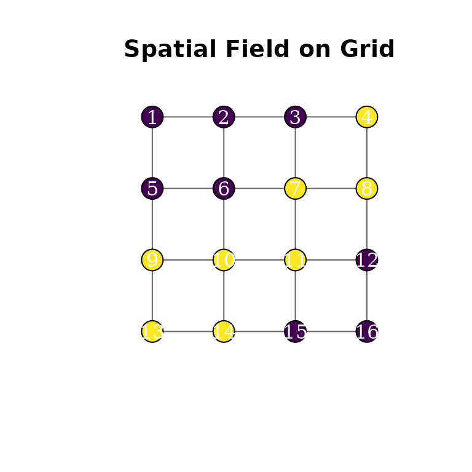
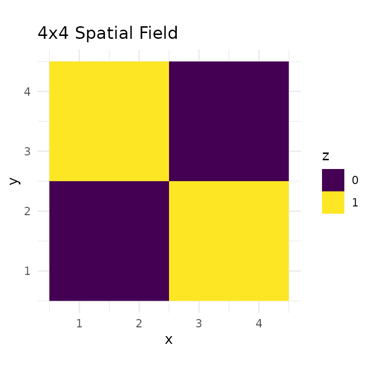
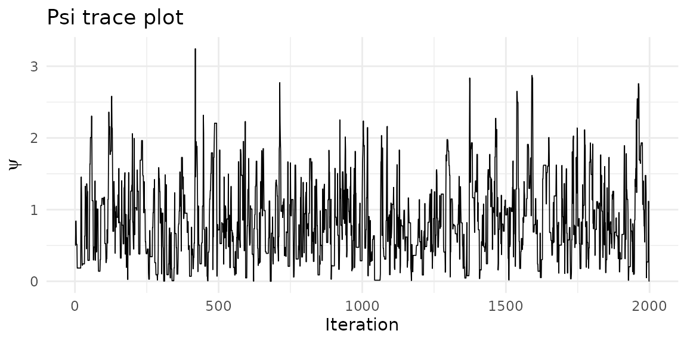
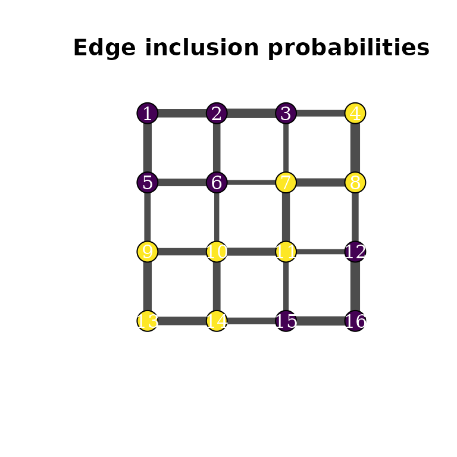

What is mdgm?
The mdgm package implements Bayesian inference for discrete spatial random fields using Mixtures of Directed Graphical Models. Like a Markov random field (MRF), the MDGM takes an undirected graph as input to represent spatial structure. However, instead of specifying a single joint distribution with an intractable normalizing constant, the MDGM defines a mixture over directed acyclic graphs (DAGs) compatible with the undirected graph. Each DAG admits an efficient factorization, avoiding the computational burden of the MRF partition function while providing valid probabilistic inference.
The approach is described in:
Carter, J. B. and Calder, C. A. (2024). Mixture of Directed Graphical Models for Discrete Spatial Random Fields. arXiv:2406.15700
Building a graph
Create a 4x4 grid graph with rook adjacency using
nug_from_grid():
nug <- nug_from_grid(4, 4, seed = 42L)
nug$nvertices()
#> [1] 16
nug$nedges()
#> [1] 24Graphs can also be constructed from an adjacency matrix, edge list, or adjacency list — see the Working with Undirected Graphs vignette.
Visualizing the graph with igraph
The igraph package (suggested, not required) provides a quick way to visualize the neighborhood structure:
library(igraph)
#>
#> Attaching package: 'igraph'
#> The following objects are masked from 'package:stats':
#>
#> decompose, spectrum
#> The following object is masked from 'package:base':
#>
#> union
# Build igraph object from the NUG edge structure
n <- nug$nvertices()
el <- do.call(rbind, lapply(1:n, function(v) {
nbrs <- nug$neighbors(v)
nbrs <- nbrs[nbrs > v]
if (length(nbrs) == 0) return(NULL)
cbind(v, nbrs)
}))
g <- graph_from_edgelist(el, directed = FALSE)
# Grid layout matching the spatial positions
coords <- cbind((seq_len(n) - 1) %% 4 + 1, 4 - (seq_len(n) - 1) %/% 4)
plot(g, layout = coords, vertex.size = 20, vertex.label = 1:n,
vertex.label.color = "white", vertex.color = "steelblue",
edge.color = "grey40", main = "4x4 Grid Graph")
Fitting a standalone model
In a standalone model, the spatial field is observed directly — no emission distribution is needed. Here we fit a spanning-tree MDGM to a deterministic checkerboard pattern on the 4x4 grid:
z <- c(0L, 0L, 0L, 1L,
0L, 0L, 1L, 1L,
1L, 1L, 1L, 0L,
1L, 1L, 0L, 0L)
model <- mdgm_model(nug, dag_type = "spanning_tree")
result <- mcmc(model, z_init = z, psi_init = 0.5,
n_iter = 2000L, psi_tune = 1.0, seed = 42L)
result$summary()
#> MDGM MCMC Results
#> Vertices: 16, Colors: 2
#> Iterations: 2000 (burnin: 0)
#> Psi acceptance rate: 0.478
#> Psi posterior mean: 0.8446 (sd: 0.5612)
#> Diagnostics:
#> psi — R-hat: 1.0013, ESS: 272We can color the graph vertices by their field values:
plot(g, layout = coords, vertex.size = 20, vertex.label = 1:n,
vertex.color = c("#440154", "#fde725")[z + 1],
vertex.label.color = "white", edge.color = "grey40",
main = "Spatial Field on Grid")
Or visualize as a raster:
grid_df <- data.frame(
x = rep(1:4, times = 4),
y = rep(4:1, each = 4),
z = factor(z)
)
ggplot(grid_df, aes(x, y, fill = z)) +
geom_raster() +
scale_fill_manual(values = c("0" = "#440154", "1" = "#fde725")) +
coord_equal() +
theme_minimal() +
labs(title = "4x4 Spatial Field", fill = "z")
Posterior diagnostics
Trace plot for the spatial dependence parameter :
psi_df <- data.frame(iteration = seq_along(result$psi()), psi = result$psi())
ggplot(psi_df, aes(iteration, psi)) +
geom_line(linewidth = 0.3) +
theme_minimal() +
labs(x = "Iteration", y = expression(psi), title = "Psi trace plot")
Acceptance rates:
result$acceptance_rates()
#> psi graph
#> 0.4777389 0.0000000Edge inclusion probabilities
The edge_inclusion_probs() method counts how often each
undirected edge appears in the posterior spanning-tree samples. We can
use these proportions to scale edge widths:
eip <- result$edge_inclusion_probs(nug, burnin = 200L)
head(eip[order(-eip$prob), ])
#> vertex1 vertex2 prob
#> 7 4 8 0.8116667
#> 21 12 16 0.8111111
#> 24 15 16 0.7794444
#> 3 2 3 0.7700000
#> 1 1 2 0.7238889
#> 2 1 5 0.7177778
# Match edge inclusion probs to igraph edge ordering
edge_probs <- numeric(ecount(g))
for (i in seq_len(nrow(eip))) {
eid <- get.edge.ids(g, c(eip$vertex1[i], eip$vertex2[i]))
edge_probs[eid] <- eip$prob[i]
}
#> Warning: `get.edge.ids()` was deprecated in igraph 2.1.0.
#> ℹ Please use `get_edge_ids()` instead.
#> This warning is displayed once per session.
#> Call `lifecycle::last_lifecycle_warnings()` to see where this warning was
#> generated.
plot(g, layout = coords, vertex.size = 20, vertex.label = 1:n,
vertex.color = c("#440154", "#fde725")[z + 1],
vertex.label.color = "white",
edge.width = edge_probs * 10,
edge.color = "grey30",
main = "Edge inclusion probabilities")
Edges between same-colored vertices appear more frequently in the posterior spanning trees, reflecting the spatial dependence captured by .
Fitting a hierarchical model
In a hierarchical model, is a latent field and observations are generated through an emission distribution. Here we use a Bernoulli emission:
model_h <- mdgm_model(nug, dag_type = "spanning_tree", n_colors = 2L,
emission = "bernoulli")
# Simulate 5 Bernoulli observations per vertex (multiple needed for identifiability)
set.seed(1)
p_true <- c(0.2, 0.8)
y <- lapply(seq_len(n), function(i) rbinom(5, 1, p_true[z[i] + 1]))
result_h <- mcmc(model_h, y = y, z_init = sample(0:1, n, replace = TRUE),
psi_init = 0.5, theta_init = c(0.3, 0.7),
n_iter = 500L, seed = 42L)
result_h$summary()
#> MDGM MCMC Results
#> Vertices: 16, Colors: 2
#> Iterations: 500 (burnin: 0)
#> Psi acceptance rate: 0.896
#> Psi posterior mean: 0.6269 (sd: 0.5127)
#> Emission type: bernoulli
#> p_1 posterior mean: 0.2284 (sd: 0.0792)
#> p_2 posterior mean: 0.8089 (sd: 0.0675)
#> Diagnostics:
#> psi — R-hat: 1.0124, ESS: 6
#> p_1 — R-hat: 1.0025, ESS: 63
#> p_2 — R-hat: 0.9989, ESS: 207Next steps
- Working with Undirected Graphs — Graph constructors, querying structure, and sampling spanning trees.
- MDGM Model Specification — DAG types, the spatial field model, emission distributions, and MCMC details.
- Emission Models — Worked examples for Bernoulli, Gaussian, and Poisson emission distributions.